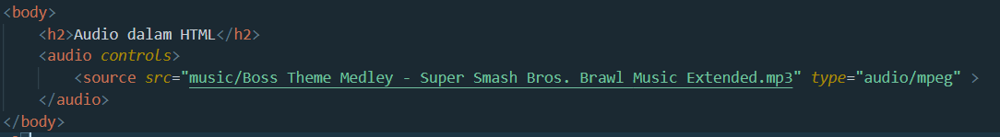
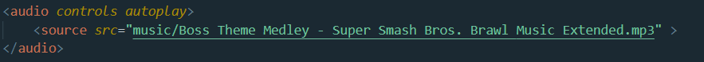
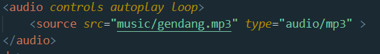
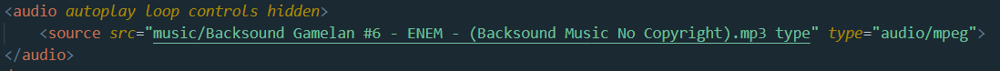
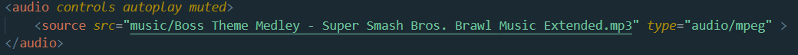

Audio dapat ditambahkan dalam html dengan cara:

Hasilnya akan seperti ini:
Fitur audio dalam html dilengkapi beberapa atribut diantaranya:
Atribut ini berfungsi untuk memunculkan kontrol seperti tombol pause, play, dan volume
Cara menggunakannya yaitu:
Hasilnya adalah :
Atribut ini berfungsi untuk langsung memainkan audio saat dimuat.
Cara menggunakannya yaitu:

Hasilnya silahkan
Klik di sini
Atribut ini berfungsi untuk memutar suatu audio berulang-ulang.
Caranya yaitu :

Hasilnya silahkan klik disini.
Atribut ini berfungsi untuk memutar suatu audio dalam latar belakang. Jadi tidak ada controls untuk
mengatur audio. Caranya yaitu:

Hasilnya silahkan klik disini.
Atribut ini berfungsi untuk mematikan volume saat audio dinyalakan.
Caranya yaitu:

Hasilnya: